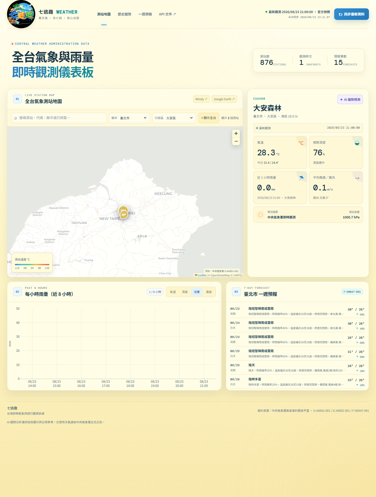

NEW PROJECT · 2026/08/23
看天氣，
看天氣，
放心去七逃。
把中央氣象署即時觀測、每小時雨量和一週預報放進同一張台灣地圖。從資料下載、SQLite 歷史保存、FastAPI 到 Leaflet／Plotly 前端，完成一套可每小時自動更新的全端氣象系統。
- FastAPI
- SQLite
- Leaflet
- Plotly
- CWA Open Data
01 · LIVE DASHBOARD
台灣氣象，一頁看懂
實測畫面已顯示最近 1 小時雨量與完整 0–50 mm 圖軸；歷史資料會隨服務每小時持續累積。

02 · CORE FEATURES
從即時資料到旅行決策
全台測站地圖
以 Leaflet 呈現台灣氣象測站，支援縣市、測站代碼與關鍵字搜尋。
真實每小時雨量
改用 O-A0002-001 的 Past1hr 雨量，保存最近 8 個整點時段。
自動與手動更新
每 60 分鐘同步三組資料；資料過期時，服務啟動後會自動補抓。
最近雨量站配對
若氣象站沒有相同代碼，後端依 WGS84 座標自動選擇最近雨量站。
互動趨勢圖
Plotly 顯示雨量、氣溫、濕度與風速，雨量縱軸固定 0–50 mm。
一週旅行預報
整合縣市一週預報，快速查看溫度、天氣現象與降雨機率。
03 · SYSTEM FLOW
完整全端資料流程
三組官方開放資料
清理、整點分桶、配對
歷史保存與索引
REST API 與排程
地圖與互動圖表
三組官方資料
- O-A0001-001氣象測站逐時觀測
- O-A0002-001過去 1 小時雨量
- F-D0047-091各縣市一週預報
API Key 不進前端
授權碼只放在後端 `.env`，且不提交到 GitHub。瀏覽器透過本專案 API 讀取資料，錯誤訊息也會自動遮蔽敏感字串。
閱讀專案說明 →
04 · BUILDING IN CONVERSATION
從一句需求，逐步長成作品
「雨量每小時偵測一次，抓 8 小時，單位一律改成 0～50 mm。」閱讀完整重點紀錄 ↗